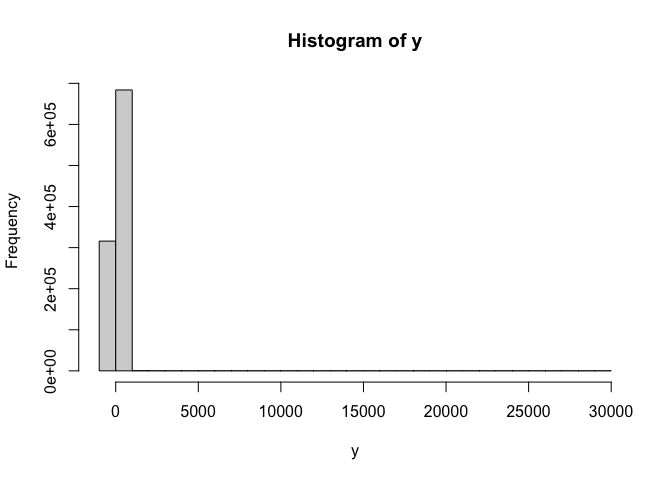

The fqr package makes quantile regression fast and scaleable using accelerated gradient descent. For both big and small problems it is substantially faster than other quantile regression approaches. fqr can handle quantile regression problems on the order of 10 million rows and 100 columns in less than a minute, and can exactly match existing implementations on small problems.
While the quantile loss function isn’t differentiable, you can get an arbitrarily close smooth approximation by replacing the “check” function with an appropriately tilted least squares approximation for a small neighborhood around the origin. As the size of that window goes to zero, you have your check function back!
The package uses 2 stopping rules to assess convergence: the maximum value of the gradient vector (for the coefficients of the quantile regression) and the relative change in the loss function (scaled by the step size).
fqr is substantially faster than the quantreg package’s simplex and interior point methods (e.g. “br” or “pfn”), especially for large problems. The algorithm implemented via the Armadillo library for linear algebra in C++. It also has no dependencies other than base R and (if building from source) a C++ compiler.
Installation
You can install the fqr package from github by running
# get remotes if needed:
# install.packages("remotes")
remotes::install_github("be-green/fqr")Basic Use
The fqr package uses the same basic formula interface that lm does, with standard errors calculated based on subsampling.
library(fqr)
data(rock)
fqr(area ~ peri, data = rock, tau = c(0.25, 0.5, 0.75))
#> Tau: 0.25
#> Coefficient SE
#> (Intercept) 5.213347e+03 500.04947110
#> peri 4.185437e-02 0.01041795
#> Tau: 0.5
#> Coefficient SE
#> (Intercept) 7348.5642814 4.255263e+02
#> peri 0.0494302 7.136446e-03
#> Tau: 0.75
#> Coefficient SE
#> (Intercept) 8737.2838152 3.990133e+02
#> peri 0.0410983 4.911924e-03To turn off standard errors (and just get point predictions), you can set se = F.
fqr(area ~ peri, data = rock, se = F, tau = c(0.25, 0.5, 0.75))
#> Tau: 0.25
#> Coefficient SE
#> (Intercept) 5.214035e+03 NA
#> peri 4.133264e-02 NA
#> Tau: 0.5
#> Coefficient SE
#> (Intercept) 7.350090e+03 NA
#> peri 4.890847e-02 NA
#> Tau: 0.75
#> Coefficient SE
#> (Intercept) 8.739148e+03 NA
#> peri 4.057656e-02 NABenchmarks
Ok, but how fast is this approach? Let’s just take some point estimates and see how it goes.
Medium N, Medium P
But with all of this done, let’s compare to some benchmarks from the sfn and pfn algorithms, which are currently the fastest in the quantreg package.
# simulate some data, 101 x 100,000
p <- 20
n <- 1e6
beta <- rnorm(p + 1)
x <- cbind(1, matrix(rnorm(p * n), ncol = p, nrow = n))
y <- x %*% beta + exp(rnorm(n, sd = 2))
# let's take a look at what this looks like
hist(y)
Ok so we have some very skewed data! Perfect for median regression.
start = proc.time()
# lower level version that just takes design matrix
fit <- fit_fqr(x, y, tau = 0.5, se = F)
end = proc.time()
end - start
#> user system elapsed
#> 15.429 0.388 3.708I attempted to run the same thing with the quantreg package, with the method advised for large datasets, like so:
# newton interior point method w/ pre-processing
start <- proc.time()
fit_pfn <- quantreg::rq.fit.pfn(x, y, tau = 0.5)
end <- proc.time()
end - startbut I killed it after 20 minutes (feel free to try this yourself!). I guess that leaves us with a comparison between ~3-5 seconds for fqr and a lower bound of 20 minutes for pfn?
Big N, Big P
Let’s benchmark with a bigger set of columns.
p <- 100
n <- 1e6
beta <- rnorm(p + 1)
x <- cbind(1, matrix(rnorm(p * n), ncol = p, nrow = n))
y <- 10 + x %*% beta + exp(rnorm(n, sd = 2))
start = proc.time()
fit <- fit_fqr(x, y, tau = 0.5, se = F)
end = proc.time()
end - start
#> user system elapsed
#> 152.218 3.381 24.449I’m not going to run the quantreg pfn algorithm since it was so slow for the last problem. fqr is a little bit slower as the columns get big, taking 25-30 seconds.
Big N, Small P
Let’s try a more manageable set of dimensions, with lots of observations.
p <- 10
n <- 1e7
beta <- rnorm(p + 1)
x <- cbind(1, matrix(rnorm(p * n), ncol = p, nrow = n))
y <- x %*% beta + exp(rnorm(n, sd = 2))
start = proc.time()
fit <- fit_fqr(X = x, y = y, tau = 0.5, se = F)
end = proc.time()
end - start
#> user system elapsed
#> 93.293 2.060 20.329I attempted to do the comparable thing for the pfn algorithm:
start = proc.time()
fit <- quantreg::rq.fit.pfn(x = x, y = y, tau = 0.5)
end = proc.time()
end - start…but I killed the process after 15 minutes or so.
Medium-scale Problem
Ok, so we haven’t been able to run quantreg on these datasets, let’s see how it does with a sort of medium-scale problem. Let’s use the same DGP.
p <- 10
n <- 1e5
beta <- rnorm(p + 1)
x <- cbind(1, matrix(rnorm(p * n), ncol = p, nrow = n))
y <- x %*% beta + exp(rnorm(n, sd = 2))
start = proc.time()
fit <- fit_fqr(X = x, y = y, tau = 0.5, se = F)
end = proc.time()
end - start
#> user system elapsed
#> 0.869 0.070 0.230
start = proc.time()
fit_pfn <- quantreg::rq.fit.pfn(x = x, y = y, tau = 0.5)
#> Warning in quantreg::rq.fit.pfn(x = x, y = y, tau = 0.5): Too many fixups:
#> doubling m
end = proc.time()
end - start
#> user system elapsed
#> 1.574 0.383 1.790The coefficients match out to the 4th or 5th decimal place:
Small Problems
It can also be faster for small problems, and with conservative tolerance parameters will come extremely close to the default quantreg outputs. Here’s an example:
# simulate some data, 101 x 10,000,000
p <- 3
n <- 10000
beta <- rnorm(p)
x <- cbind(matrix(rnorm(p * n), ncol = p, nrow = n))
y <- 10 + x %*% beta + exp(rnorm(n, sd = 2))
microbenchmark::microbenchmark(
fqr_fit <- fqr(y ~ ., se = F, beta_tol = 0, check_tol = 0,
data = data.frame(y = y, x)),
br_fit <- quantreg::rq(y ~ ., tau = 0.5,
data = data.frame(y = y, x), method = "br"),
times = 100
)
#> Unit: milliseconds
#> expr
#> fqr_fit <- fqr(y ~ ., se = F, beta_tol = 0, check_tol = 0, data = data.frame(y = y, x))
#> br_fit <- quantreg::rq(y ~ ., tau = 0.5, data = data.frame(y = y, x), method = "br")
#> min lq mean median uq max neval
#> 19.48368 20.30906 21.50476 20.8557 21.74249 34.92471 100
#> 75.13717 76.34309 80.20037 77.4336 82.66268 98.75256 100The coefficients match out to 4 decimal places:
fqr_fit$coefficients - br_fit$coefficients
#> [,1]
#> [1,] -0.0009031814
#> [2,] 0.0012812620
#> [3,] -0.0004906861
#> [4,] -0.0002251114And the check loss is nearly identical:
check <- function (x, tau = 0.5) {
sum(x * (tau - (x < 0)))
}
check(fqr_fit$residuals) - check(br_fit$residuals)
#> [1] 0.0001522271Still, though, the speed gains are most noticeable once N and P are “medium” or larger (e.g. for N < 300, probably just use quantreg).